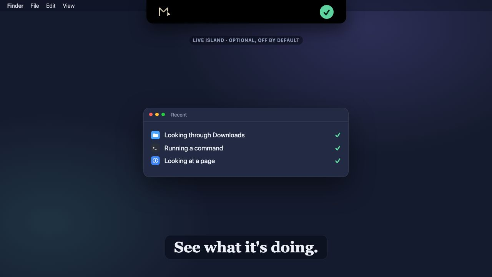

Let your AI apps use your Mac.
Let your AI apps use your Mac.It browses where you can see it.
Visible, non-focus-stealing browser automation in Safari and Chrome. It works in a tab while you keep using your Mac, frames the tab, and its cursor says what it is doing.
Mac MCP is a local server and menu bar app that lets Claude, ChatGPT, Codex, OpenCode and other MCP apps work in your Mac's apps, files, terminal and browser, with approvals you control.
Free and open source (MIT). The package is for Apple Silicon on macOS 14 or later, about {{pkg_size_mb}} MB. The Terminal and npm installers cover any Mac on macOS 13 or later.
curl -fsSL https://raw.githubusercontent.com/bulutarkan/mac-mcp/main/install.sh | bashnpx @bulutarkan/mac-mcp installshasum -a 256 ~/Downloads/{{pkg_name}}One request, carried through Finder, Safari, a Codex agent and Mail. Pick a scene to jump to it, or watch the screen recording.

Ask a chat app to work with the files in your Downloads folder and it tells you it can't open them.
Claude Desktop, Claude Code, ChatGPT, Codex and OpenCode connect from the menu bar app. ChatGPT reaches your Mac through a public address you turn on.
It works inside Finder, Notes and Mail through macOS Accessibility. The live island beside the notch shows the app in use, then a tick. It is optional and off by default.
The form is filled in a Safari tab while you keep typing in your own window. The tab is framed and the agent's cursor says what it does.
A Codex, Claude Code or OpenCode agent takes the task and reports its steps and the files it changed. Scheduled Tasks repeat it on your schedule.
With Server Approval on, risky actions like sending an email wait for your Allow Once or Block.
Mac MCP gives your AI app the same apps, files, terminal and browser you use, through one local server.
Visible, non-focus-stealing browser automation in Safari and Chrome. It works in a tab while you keep using your Mac, frames the tab, and its cursor says what it is doing.
Your AI app opens Notes, looks through a folder in Finder or drafts a reply in Mail through macOS Accessibility, with the same buttons and menus you use.
Delegate a task to one of ten agent CLIs, or a whole team of them, and read a report of the steps and the files they changed.
Pick folders in Settings › Privacy and your AI app can ask what your contracts, invoices or notes say, and get the file and page back. The index stays on your Mac.
lease-agreement.pdfpage 4
Scheduled Tasks run AI tasks and scripts on their own. Recipes save a job your AI did once and replay it with one click, from Settings, the Shortcuts app or Siri.
Weekly ad reportMon 09:00
Memory and lessons carry what worked into the next session. Agent Skills you installed for your CLI agents are found automatically, with nothing copied.
~/.agents/skills~/.claude/skills~/.codex/skills~/.mac-mcp/skills
Mac MCP {{version}}
Pick a project folder and talk to your own agents, each signed in as you through its own CLI, with Mac MCP added for the Mac. Models, thinking and modes come from the agent itself.
Each step opens to show what it did: file edits show their diff, commands their output as a terminal. When the agent asks before a change, you answer in the chat.
Claude, Codex, OpenCode, GitHub Copilot, Antigravity, Kilo Code, Kimi Code, Goose and Cline. Add files and images, and write while one works: the message waits its turn.
Settings speak one quiet language, with logos and status dots instead of long cards, and Usage in tabs. The menu shows one card at a time and says just "Ready" when idle.
Teams check every setting before they start, read the full report of a task they depend on, and never lose a message to an agent that already finished.
Delegated agents look up your memories and skills before they search, and keep a lasting preference quietly. GitHub Copilot joins as an agent, also on your own key.
Permission profiles decide what may run. Server Approval asks before risky actions when you turn it on. Privacy settings keep apps and sites out of reach.
Reads, inspects and browses. Tools that change something are refused.
The default. Everyday work is allowed; raw command execution and update control are blocked.
Every registered capability. A capability that is allowed is not a prompt; turn on Server Approval for that.
Claude Desktop wants to send an email with Mail.
mac_app · Mail · send · finance@example.com
Server Approval is waiting for your answer.
One click in the menu bar app, or one command. Local apps talk to Mac MCP on your Mac. ChatGPT needs a public HTTPS address: Cloudflare Tunnel, ngrok or your own.
Connection guidemac-mcp connect --client claude-desktop
Adds Mac MCP to Claude Desktop's config and keeps a backup of the old file. Restart Claude Desktop.
Open this page on your Mac to install.
Three ways in, one result: the menu bar app and the local server, started for your account.
Recommended. Apple Silicon, macOS 14 or later.
Mac MCP {{version}} ({{release_id}}), about {{pkg_size_mb}} MB. No Terminal, Xcode or Python needed.
Download the .pkgSHA-256, published with the GitHub release:
{{pkg_sha256}}The package is not notarized yet. If macOS stops it, open System Settings › Privacy & Security and choose Open Anyway.
Any Mac, Apple Silicon or Intel, macOS 13 or later.
Installs the newest cryptographically verified stable release checkpoint. Needs Python, Git and the Xcode command line tools.
curl -fsSL https://raw.githubusercontent.com/bulutarkan/mac-mcp/main/install.sh | bashFor a stronger check, download install.sh from the release and verify its signer. Verification guide
Node.js 18 or later, macOS 13 or later.
The same installer, through npm. The package also checks, updates and repairs an install.
npx @bulutarkan/mac-mcp installAlready installed? Update with mac-mcp update or from Settings › General.
Then connect your AI app from the menu bar app, and allow Accessibility and Screen Recording for Mac MCP when the first-run tour asks. Prefer to build it yourself? Install from source.
No. The server runs on your Mac. A public address is only needed for ChatGPT or remote access, through Cloudflare Tunnel, ngrok or your own HTTPS endpoint.
Browser work happens in a Safari or Chrome tab while you keep using your Mac. Actions that need the foreground are a separate capability, so background work does not quietly take your focus.
Any MCP app. The menu bar app and mac-mcp connect set up Claude Desktop, Claude Code, Codex, OpenCode, Kimi, Grok, Antigravity, pi, Cline, Kilo and Goose; ChatGPT connects through its connector settings.
What it reads through Mac MCP is sent to that app's provider, like anything else you share with it. Pause observation, Private mode and the never-observe lists in Settings › Privacy limit what can be read.
Yes. Mac MCP is open source under the MIT license, with no account.